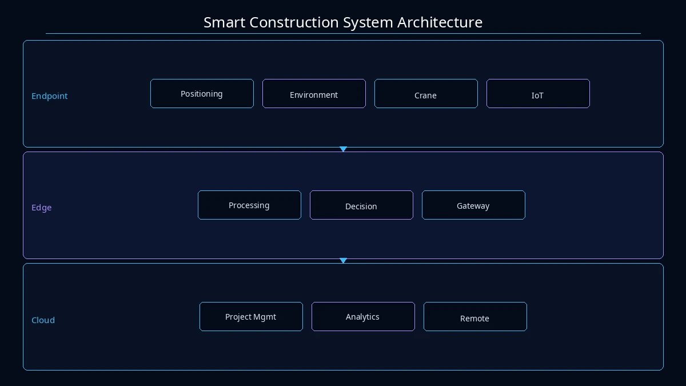

System Architecture

Smart Construction Business Architecture
The smart construction solution adopts a "Cloud-Edge-End" three-tier architecture: the end layer deploys IoT sensing devices such as personnel positioning, environmental monitoring, and tower crane monitoring; the edge layer performs real-time data processing and local decision-making; the cloud platform provides unified project management, data analytics, and remote supervision, supporting simultaneous management of multiple projects.
Solution Components
Real-name attendance, labor real-name system, payroll supervision, and personnel positioning.
AI video surveillance (helmet/reflective vest recognition), tower crane monitoring, deep foundation pit monitoring, and high-formwork monitoring.
Quality inspection, concealed works acceptance, material entry inspection, and quality issue closed-loop.
BIM progress simulation, milestone early warning, output statistics, and schedule analysis.
Material entry registration, inventory management, consumption statistics, and supplier evaluation.
Dust monitoring, noise monitoring, water/electricity monitoring, and spray linkage control.
Core Modules
Real-name attendance, labour real-name system, wage supervision, personnel positioning.
AI video surveillance (safety helmet/reflective vest recognition), tower crane monitoring, deep foundation pit monitoring, high formwork monitoring.
Quality inspection, concealed works acceptance, material incoming inspection, quality issue closed-loop.
BIM schedule simulation, milestone warning, output value statistics, duration analysis.
Material incoming registration, inventory management, consumption statistics, supplier evaluation.
Dust monitoring, noise monitoring, water and electricity monitoring, spray linkage control.
Application Architecture

Smart Construction Application Architecture
The system supports multiple terminals including WeChat mini-program, PC Web, TV dashboard, APP, and H5, meeting the needs of different roles. Project managers can view global data via PC, supervisors can use mobile APP for on-site inspection, and management can monitor project dynamics in real time through the TV dashboard.
Multi-Terminal Access
The system supports multiple terminal access including WeChat Mini Program, PC Web, TV Dashboard, APP, and H5, meeting the usage needs of different roles. Project managers can view global data via PC, supervisors can conduct on-site inspections via mobile APP, and management can grasp project dynamics in real time through TV dashboards.
Application Scenarios

Smart Construction Scenarios
Safety and quality control for high-rise residential and commercial complex construction.
Environmental monitoring and progress management for roads, bridges, and pipeline projects.
Deep foundation pit and high-formwork safety monitoring for subway stations and tunnel construction.
Steel structure installation monitoring and personnel safety management for large plant construction.
Solution Advantages
The system won the First Prize of the Science and Technology Award from the Chinese Ministry of Housing and Urban-Rural Development, with complete independent intellectual property rights. AI visual analysis accuracy reaches industry-leading levels, and multi-terminal collaboration covers all project roles, truly achieving "one platform manages the site."
Solution Value
Through digital means, safety incident rates are reduced by over 40%, schedule delays are cut by 25%, and material waste is lowered by 15%. Real-time data-driven management decisions replace experience-based approaches, creating significant economic and social value for engineering projects.
Project Practice
The Lagos FIRS Smart Construction Management System is a benchmark project deployed overseas by the company, covering six management dimensions: personnel, safety, quality, schedule, materials, and environment. It won the First Prize of the MOHURD Science and Technology Award, fully validating the solution's applicability in complex engineering environments.
Project Achievements
The Lagos FIRS Smart Construction Site Management System won the First Prize of the MOHURD Science and Technology Award, fully demonstrating the company's professional expertise in building intelligence and large-scale engineering projects.